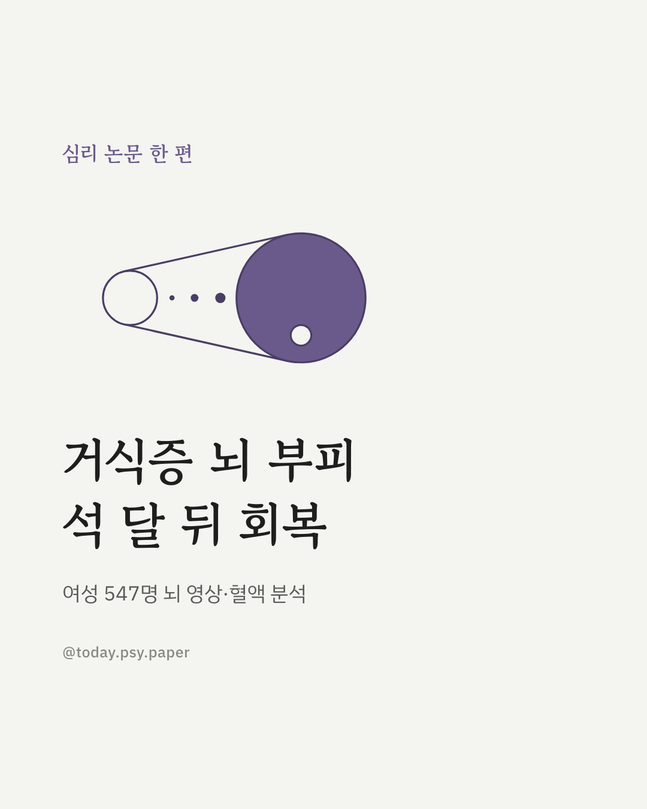
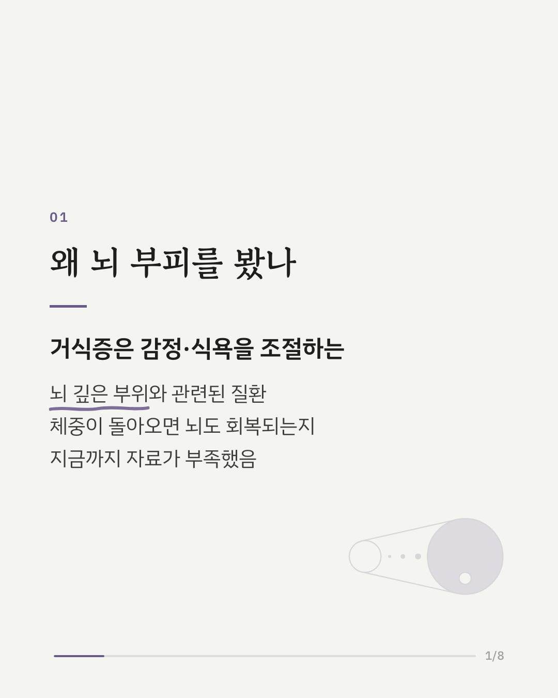
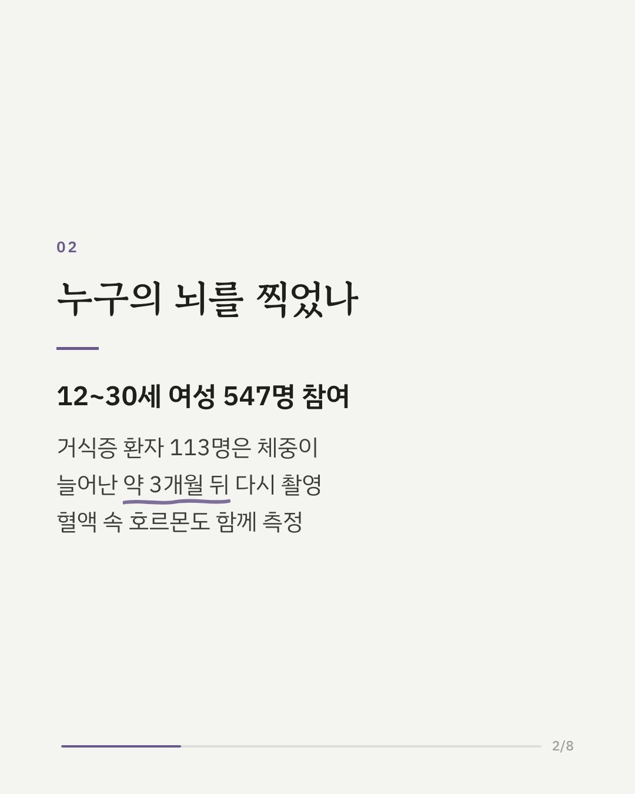
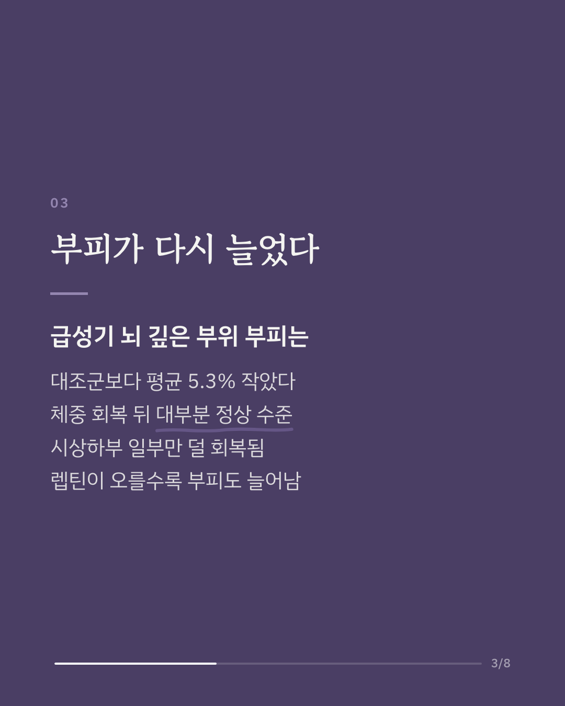
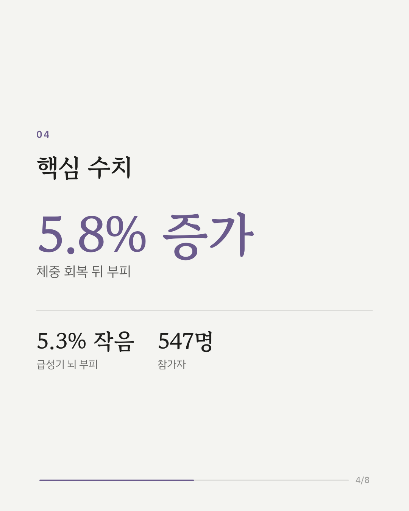
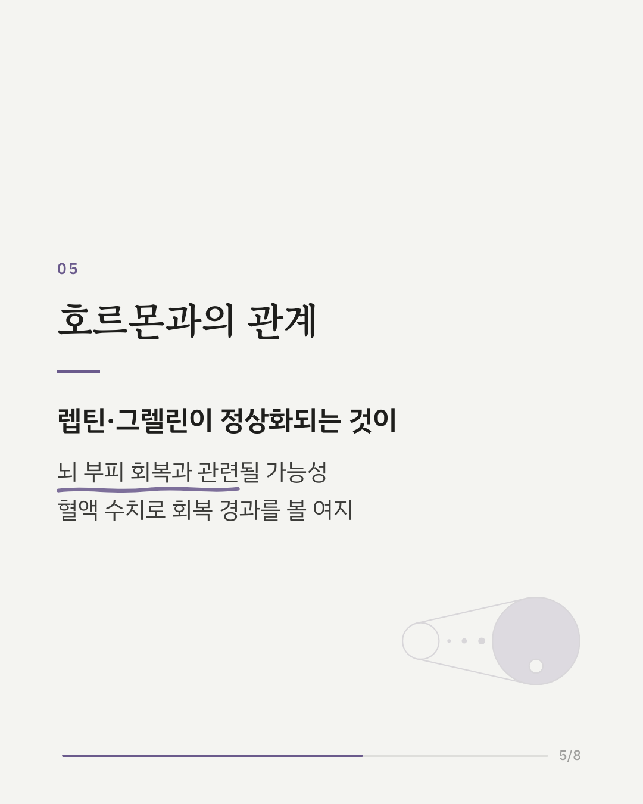
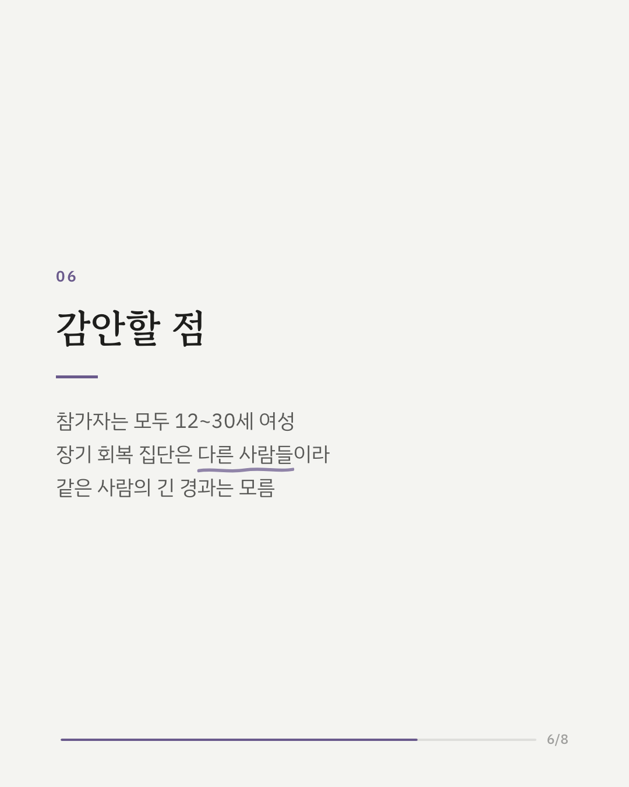
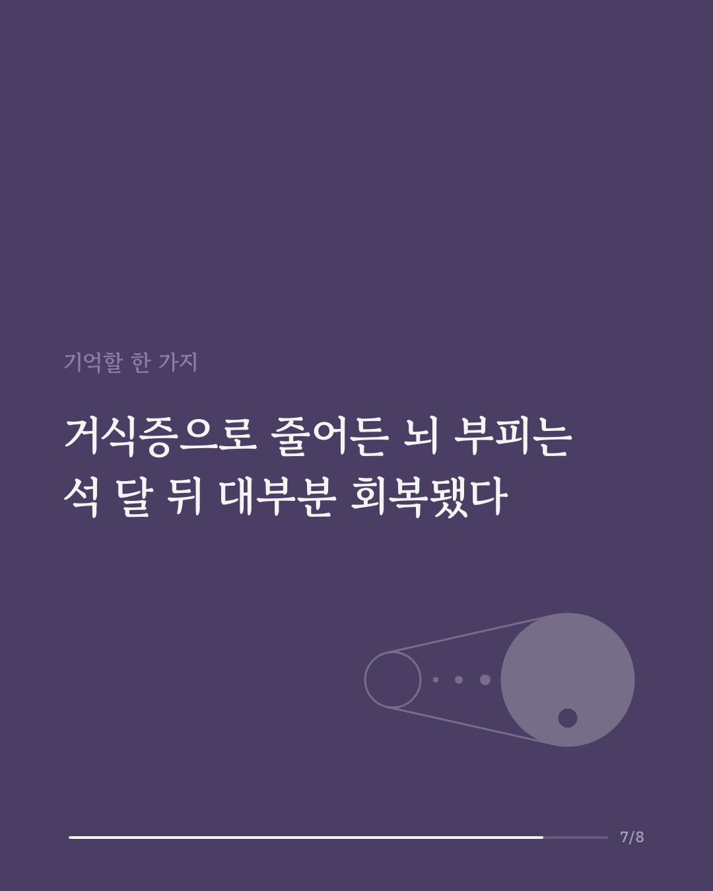
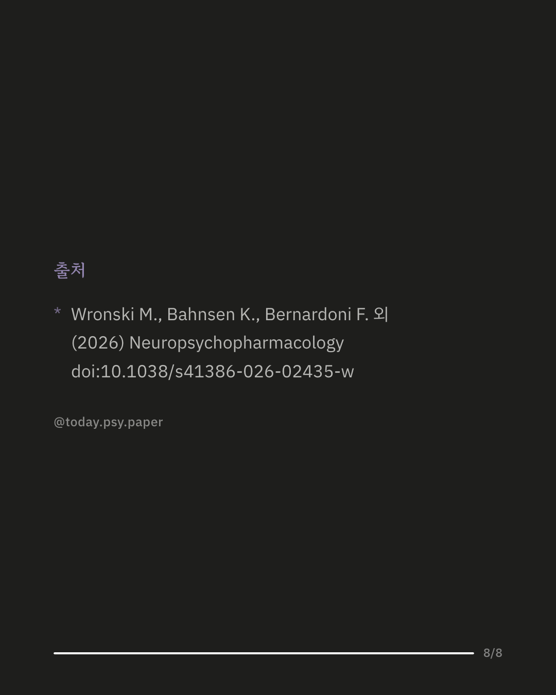

거식증(신경성 식욕부진증)에서는 감정과 식욕을 조절하는 뇌 깊은 부위에 변화가 있다고 알려져 있습니다. 이 연구는 섭식장애 환자의 영양 상태에 따라 그 부피가 얼마나 달라지는지 확인하려고 12~30세 여성 547명의 뇌 영상과 혈액을 분석했습니다. 급성기 거식증 환자 168명, 장기간 체중을 회복한 80명, 건강한 대조군 299명이 참여했고, 환자 가운데 113명은 체중이 늘어난 약 3개월 뒤 다시 촬영했습니다. 급성기 환자는 대조군보다 뇌 깊은 부위 부피가 평균 5.3% 작았습니다. 차이의 크기는 부위에 따라 작은 편에서 큰 편에 가까운 수준까지 다양했습니다. 체중을 회복한 뒤에는 부피가 평균 5.8% 늘어 대부분 대조군과 비슷해졌고, 시상하부 일부만 여전히 작았습니다. 식욕 조절 호르몬인 렙틴이 오를수록 시상하부 일부와 측좌핵(보상과 관련된 부위)의 부피가 더 늘었고, 그렐린이 내려간 것도 측좌핵 부피 증가와 관련이 있었습니다. 신경 손상을 나타내는 혈액 지표(NFL)가 줄어든 정도 역시 부피 증가와 관련이 있었습니다. 연구진은 이런 혈액 수치가 회복 경과를 살피는 데 쓰일 가능성을 제안했습니다. 다만 참가자가 모두 12~30세 여성이었고, 장기 회복 집단은 같은 사람을 계속 따라간 자료가 아니었습니다. 출처: Neuropsychopharmacology (2026), 'Nutritional state-dependent changes in subcortical limbic structures in anorexia nervosa are linked to leptin, ghrelin, and neurofilament light.' DOI: 10.1038/s41386-026-02435-w #거식증 #섭식장애 #신경성식욕부진증 #임상심리 #정신건강정보 #심리학연구 #논문리뷰 #뇌과학연구
python3 publish.py 42168586